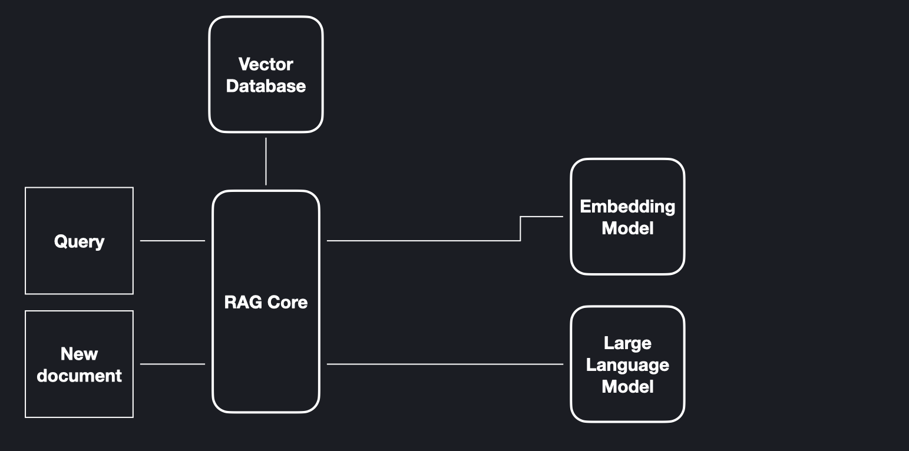
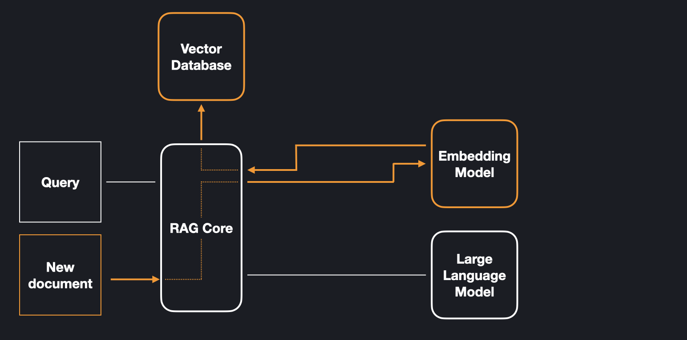
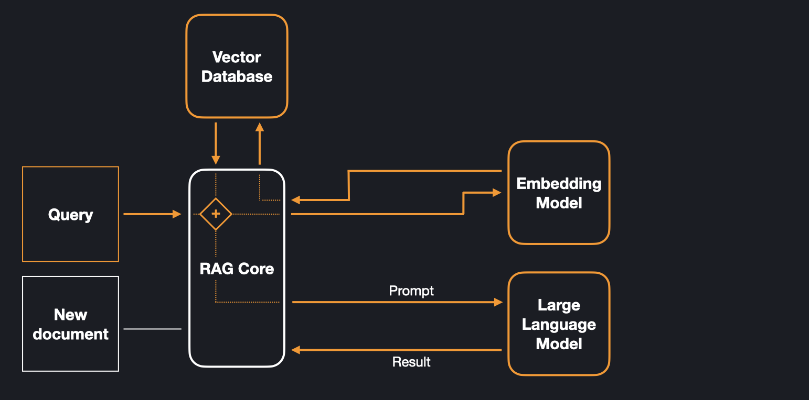

What is Retrieval-Augmented Generation?
While large language models have showcased remarkable abilities in generating coherent text and answering questions, they occasionally fall short in providing accurate responses and lack up-to-date knowledge of recent events. To address these limitations, Retrieval-Augmented Generation (RAG) was introduced. This approach combines a large language model with a knowledge store, allowing it to access factual information. RAG empowers the system to draw on a database, giving users direct control over the knowledge base. Updating the knowledge is as simple as adding new information to the database, and the system can also ‘forget’ easily by removing a document.
Components
A RAG system is composed of two distinct knowledge stores: a large language model, serving as parametric memory, and a database, functioning as non-parametric memory. In addition to these, the system features an embedding model. Users engage with the system by adding new documents, deleting documents, or querying it.
How it works
The database stores vector embeddings, which are representations of data. These embeddings are generated using an embedding model, a model which creates vector representations of fixed dimension for a given string input. Rather than adding a document as a whole, it is divided into overlapping chunks. This strategy allows the system to retrieve only the relevant pieces of information. The figure below highlights the components which are involved in adding a document and shows how the information flows between them.
After a document is stored in the database, a query can be matched against it. This process involves creating an embedding vector from the query using the embedding model and identifying the most similar vectors in the database.
Subsequently, the corresponding document chunks are retrieved from the database and forwarded to the large language model, as part of a prompt for generating a response. The model then combines the knowledge it has stored in its parameters with the relevant knowledge from the database to generate a response.
The figure shows how the information flows between the components when the system is queried.
References
Patrick Lewis et al. Retrieval-Augmented Generation for Knowledge-Intensive NLP Tasks. 2020 url
Sebastian Riedel et al. Retrieval Augmented Generation: Streamlining the creation of intelligent natural language processing models. 2020 url